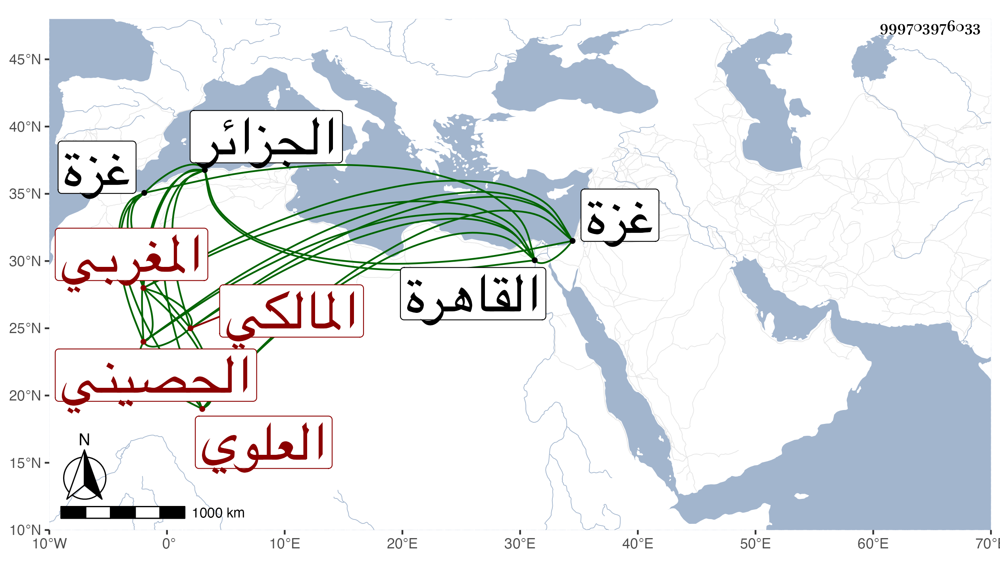

0902Sakhawi.DawLamic.ITO20230111-ara1.EIS1600.999703976033
Biography ID: 999703976033
أحمد بن شبوان بن عمر أبو العباس بن أبي الجود الحصيني من عرب بالقرب من الجزائر العابدي العلوي المغربي المالكي . شيخ فاضل مفنن قدم علينا القاهرة فقرأ على ألفية العراقي بحثا وسمع مني في الأمالي وغيرها وكذا قرأ على ابن قاسم وغيره ثم رجع إلى غزة فأقام بها يسيرا عند قاضيها وغيره ولم يلبث أن مات بها في الطاعون سنة إحدى وثمانين شهيدا وكان مع فضيلته صالحا رحمه الله ونفعنا به .
